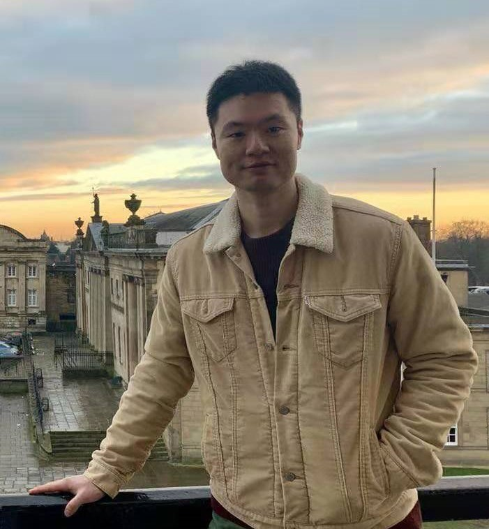
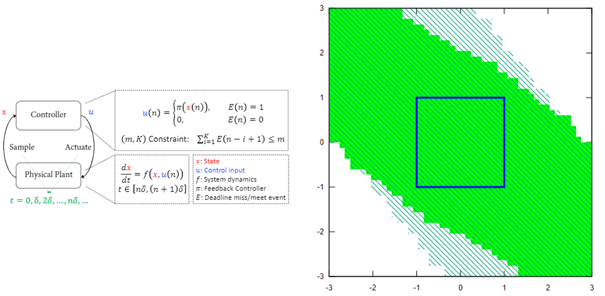

Chao Huang
|  | Hi, welcome to my page! I'm a postdoc fellow in the ECE department at Northwestern University, supervised by Prof. Qi Zhu. My research interests include design and verification of various cyber physical systems, e.g. hybrid systems, neural-network controlled systems. Prior to Northwestern, I received my B.S. and PhD in mathematics and applied mathematics and computer science from Nanjing University respectively. I also visited the Department of Computer Science at Aalborg University and was pleased to work with Prof. Kim G. Larsen.
Department of Electrical and Computer Engineering, |
Recent News
2020.07 Our paper Divide and Slide: Layer-Wise Refinement for Output Range Analysis of Deep Neural Networks has been accepted by EMSOFT 2020 and will be published in the IEEE Transactions on Computer-Aided Design of Integrated Circuits and Systems (TCAD).
2020.07 Our paper ReachNN*: A Tool for Reachability Analysis of Neural-Network Controlled Systems has been accepted by ATVA 2020.
2020.04 Our paper SAW: A Tool for Safety Analysis of Weakly-hard Systems has been accepted by CAV 2020. See you in Los Angeles, CA this July!
2020.02 Our paper Opportunistic Intermittent Control with Safety Guarantees for Autonomous Systems has been accepted by DAC 2020. See you in San Francisco, CA this July!
Tools and Projects
ReachNN*: A Tool for Reachability Analysis of Neural-Network Controlled Systems
 |
ReachNN*, is a tool that verifies the reach-avoid specification for neural-network controlled systems and is available HERE. Detailed discription can be found in Research page.
|
SAW: A Tool for Safety Analysis of Weakly-hard Systems
|  | SAW, is a tool for safety analysis of weakly-hard systems, in which traditional hard timing constraints are relaxed to allow bounded deadline misses for improving design flexibility and runtime resiliency. It is now available HERE. Detailed discription can be found in Research page.
|
Education
Nanjing University: PhD, Computer science, 2011 - 2018
Nanjing University: B.S., Mathematics, 2007 - 2011
Work
Northwestern University, Evanston: Postdoc fellow, ECE, 2018 - present